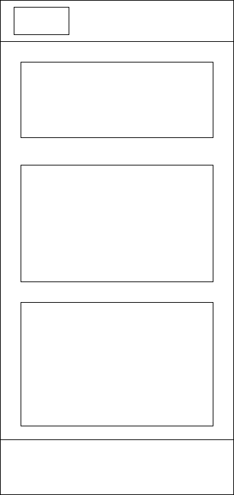
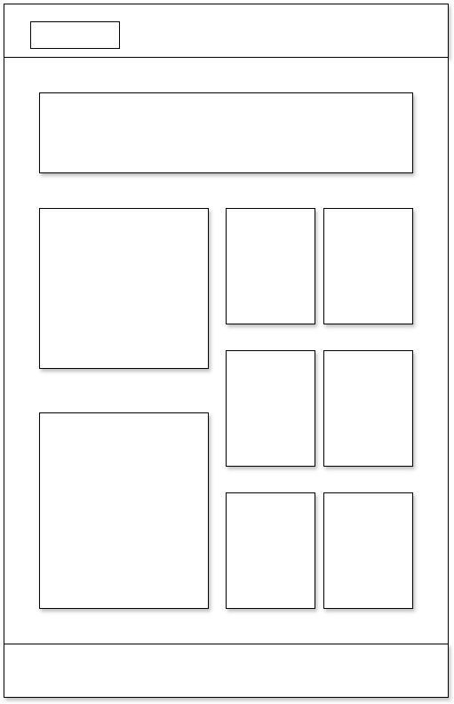

Site Name
Amebo — a short, memorable name inspired by West African pidgin usage ("amebo" = gossip/chatter). It's ideal for a blog that mixes timely tech coverage with cultural storytelling and approachable science & lifestyle writing. It feels local, conversational, and brandable.
Optional domains: amebo.blog, amebo.tech, amebohub.com
Site Purpose
Amebo provides well-researched explainers, concise news rundowns, long-form cultural features, practical lifestyle guides, and accessible science pieces. Targeted content types include: feature articles, quick-read explainers, interviews, resource lists, and a weekly newsletter.
Scenarios (user questions)
- Where can I find a concise explainer about the latest smartphone OS update?
- I'm researching climate tech — what beginner-friendly explainers and curated resources does Amebo offer?
- Where can I find human-interest culture pieces about local creative scenes?
Color Schema
Primary: #0b3619 — used for headings, CTAs, primary buttons, and brand accents.
Secondary / Background: #f0f0f0 — used for page background and subtle card backgrounds.
Text / Muted: #585858 — used for body copy, captions, and secondary UI text.
Typography
Selected web fonts:
- Cinzel Decorative — display headings, site brand/wordmark.
- Roboto — primary body text, navigation, UI elements (clean and readable).
- Merriweather — featured article intros, pull quotes, and bylines (adds warmth).
Wireframe Layout
Mobile-first responsive design. Flexible grid layouts for article listings, with card-style previews on mobile and multi-column grids on larger screens.
Mobile
Large screens
